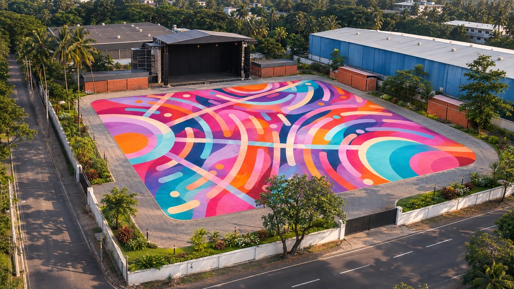

Plan an exhibition, conference, concert or celebration around the venue and format that suit your event.
Indoor venue · Architectural visualisation
Air-conditioned Convention Hall
Indoor event space for exhibitions, conferences, corporate gatherings and large celebrations. The masterplan lists 40,000 sq. ft. of indoor event space and a separate 8,300 sq. ft. wedding hall.
Outdoor venue · Proposed visualisation
Trade Centre Arena
A landscaped open-air setting for concerts, festivals and cultural gatherings. The masterplan lists 58,000 sq. ft. of arena landscaping and a separate 9,000 sq. ft. amphitheatre.
Areas are from the supplied masterplan. Confirm venue availability, capacities and layouts with the events team.
Proposed public-art concept
The Gathering Canvas
The proposal imagines the concert ground as a continuous mural, framed by tropical planting and shaped around the stage. Concentric arcs and fields of colour create a backdrop for performances, festivals and community gatherings.
The concept also proposes supervised painting sessions for local artists, design students and residents.

Proposed aerial visualisation from The Gathering Canvas brochure
Venue enquiries
Plan your event in Kochi
Share your preferred dates, event format and expected guest count with the IGNIVA team.